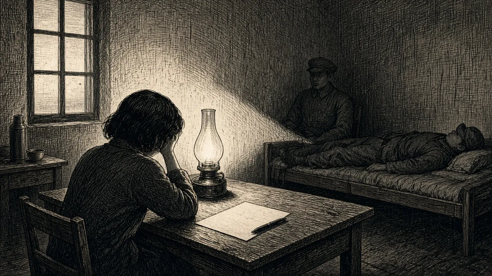
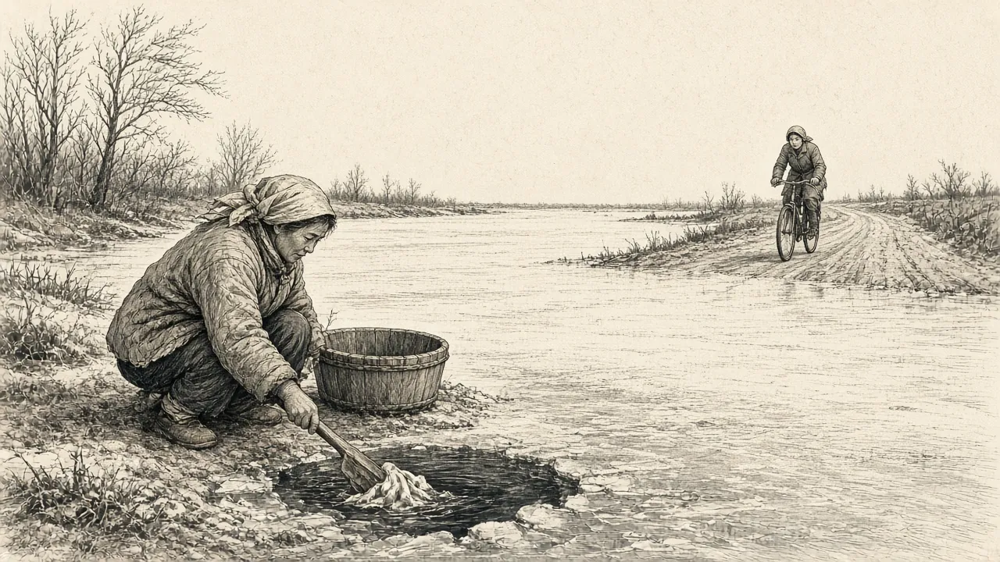

七 挣扎
我于一九五七年九月份黄县师范速成班毕业后，分配在掖县沙河镇西杜家小学工作，正好落在了沙河镇政府的管辖之内。五八年掖县出现了一封骂政府的匿名信，他们怀疑是我写的，借机搞批斗会逼我承认。一连几个月，我白天给学生上课，晚上还要开会挨整，他们的理由就是信的内容和我爸爸讲的话相似--因为仇恨，爸爸是经常在人前人后骂他们。他叫张镇长“张鳖仔子”，把方副镇长叫“方母子”，叫卫生局局长曲日新“曲坏种”，还有“叛徒任文波”。凡是那些陷害过妈妈的人，都是爸爸公开叫骂的对象。现在沙河那帮仇人，捞不到他了，而我仍在他们势力范围内，就成了他们的出气筒。他们逼我承认，匿名信是爸爸授意我写的。一次次的小组辩驳不能说服我，就组织了一次全镇各学校的教师和卫生科与爸爸斗过的那些坏人，用了一晚上的时间开大会专门批斗我。那个曾经被爸爸在批斗会上揭了叛徒老底子、当时无地自容的任文波，一马当先成了攻击我揭发我家的重点人物，对我百般歪曲恐吓，是想连哄带骗，逼我承认这信是爸爸叫我写的。我如果失口承认了，他们就有了跨县去揪斗我爸妈的借口。我看透了他的用意，坚持说：“在家里我们不谈政治，爸妈他们过去的事情我不知道。”这下我自己掉进他的坑里去了。他知道我说了不知道过去的事情，就不能像爸爸那样揭发他的叛徒老底。他却可以随便捏造事实泄私愤，说假话诬蔑我爸爸，对我则强逼道：“ 你说信不是你写的，那么你驳倒我几件事：一，你根本不识字，不会写信；二，你没有这样的家庭条件和遭遇; 三，你长期在外离家很远......”当时我被他忽悠了，他的老底我全知道，我如果和盘托出他的叛徒老底儿，他的嚣张气焰就会被打掉。但我不能说，不能为了争口气而落入他的圈套。批斗会一直开到晚上，他们仍没达到目的，夜已深，会散了，却仍不放过我。专案组两个人把我带到一个宿舍房间，继续纠缠审问，他俩轮班一个躺在旁边睡觉休息，另一个死盯住我，用猎人熬鹰的办法，不让我闭眼，不让休息，不停地盘问，不给思考时间，他俩是半个小时一轮换，企图打乱我的思维，趁我迷乱恍惚之机，达到他们卑鄙的目的。熬到天放亮了，我也实在睁不开眼迷糊烦躁到了极点，就不耐烦地说了一句：“这封信，就算是我写的了。你们爱怎办就怎么办吧！” 这话一出口，完蛋了，连躺在旁边睡觉的那人也一骨碌爬起来，紧接着说：“你终于承认了，你早这么说，问题早就解决了，何苦等到现在。” 于是他们拿出那封匿名信，叫我左手抄写一遍，右手抄写一遍。得到我的亲笔模仿的两份材料，他俩收拾起东西收手了，叫我等待处理结果。自此我陷入了后悔得不能自拔的地步。我怎么说了那么句授人以柄的话呢？追悔莫及呀。信的处理结果一直也没等到。大概那俩坏蛋早把这事交差忘掉啦。可对我来说，这事让我悔青了肠子，成了心病，时常涌上心头的悔恨自责无法诉说。总恨自己说了错话，背上了不该背的黑锅。

用猎人熬鹰的办法，不让我闭眼，不让休息，不停地盘问
那时的家已经搬到了平度公社，我隔一周才能回家一趟，眼看着三个幼小的弟弟妹妹，还有精神和身体都很差的爸爸妈妈，我受的打击诬陷只能憋在心里，不能让爸妈知道，怕他们为我担心，日子更加难熬。那时我觉得，只要我顶住了，那些坏人就不能来骚扰爸爸妈妈，天就塌不下来，我的弟弟妹妹们就有家。更何况我根本就没写那封匿名信。老百姓有句俗话“乾屎抹不到人身上”，我怕啥？在爸妈面前，我做出一幅坚强勇敢的摸样，背后却是恐惧迷茫，不知道那封匿名信会是怎样的处理结果。那种无助无奈的日子真难过啊。
回想起来，在妈妈被扣押的那段时间，因为太着急，手头没有文件证明坏人是怎么诬陷迫害的，到哪里告也是无果。爸爸曾让我抱着六个月的小弟弟，领着五岁的大弟弟和三岁的小妹妹，呆在镇委大门口，见人就说“您看我这个姐姐多么难做，您关心一下我的妈妈，把她放出来吧！ ” 有人敢跟我搭两句话：“ 你快抱着孩子回家等着吧，政府调查明白了，就给你们处理了，别把小孩冻着。” 可是我没法回家呀。我每次一进门爸爸就问：“今天去找到谁了？找到某某了没有？ ” 我若说没找到，人家藏起来不见我，爸爸会很失望地说：“ 唉，你不会去**局...... ” 我好难受啊！
姐姐呆了一段时间回学校了。有一天，我抱小弟弟去妈妈那儿喂奶后回到家，爸爸放声哭开了：“ 你姐姐不管咱们了，她走了，回校参加毕业考试去了。建华呀，你也要毕业考试，你弟弟谁管？你妈也只能等死了，怎么办啊！” 我只好咬牙向爸爸保证：“我管！我不去学校，我看顾弟弟妹妹。” 全家人哭成一团。那一段时间真难熬啊！我连回学校请假办个手续的机会都没有。同学们都劝我，无论如何去学校参加一下毕业考试，拿到毕业证，以后好找工作。实际上我毕业一点问题也没有，因为平时学习成绩优秀，老师们也都对我印象较好。但我没法抽身。学校新来的傅雨亭校长，又恰好是爸爸的对头，该着我倒霉。每逢我抱弟弟去找妈妈喂奶，来回一路上碰到的同学、朋友、老师都像躲瘟疫一样躲着我，没人敢跟我说话。有的坏人故意让我听见：“这个孩子每天都抱着小孩，过来过去的，那孩子是她的？她还那么小就有孩子了？ ” 我冤愤极了！回身来死死盯着说话人，其他人吓得一声不吭。我想那时如果不是因为抱着弟弟，我真能上去撕他几把！那种被欺辱的滋味，使我痛苦忿恨得无以复加。那是四十天呀，八十个来回，我是怎么熬过来的？低头亲亲怀里抱的小弟弟，泪也流到弟弟脸上：“为了你啊小弟弟，二姐豁上了，只要你饿不煞，妈妈出来我就对得起她！” 那时候，爸爸给我压力更大，张口闭口就是：“你妈都要死了，你还不快想办法救她......君子报仇十年不晚。施玄翘就是为父报仇的女中豪杰，你就要学她为你妈报仇啊......” 我只能忍着悲愤，安慰着爸爸并保证：“我一定帮你保住这个家，把弟弟妹妹们拉扯大，等待妈妈平安回来。”
苦撑苦熬了四十天，妈妈已经奄奄一息。监狱怕她死在狱中，把她抬着送回了家。弟弟妹妹小，妈妈病，我更不能脱身了。当年的毕业考试耽误了，升学考试我连想也不敢想，留下来伺侯病妈看顾弟弟妹妹是我义不容辞的责任哪！面对混乱不堪，难题多多的家，只好把小妹妹全托送保姆家（张福喜老两口对妹妹十分好），为小弟弟找了无数个保姆都不如意。我也舍不得把他送去别人家。思来想去都不如我在家里，帮着妈妈带着两个弟弟放心。没有办法，我只好休学一年。
按照爸爸的设计，我不要再去上学了。他已经就近为我找好了，在南阁公社做农业社的记分员。我可以白天在家看孩子干家务，照顾病妈妈。傍晚社员们收工时，我去给他们计算工分, 每个人干的什么活，挣多少工分，记一下账, 照样也给我自己记一天的工分，年终也给我分钱。等于我是一马双跨。爸爸高兴地和我说：“你不耽误家里的事，还能赚着公社的钱！”
这一次我为自己伤心了。想到姐姐在益都师范上学，三妹在潍坊二中上学，而我已经失学一年了，初中毕业考试没捞着参加，没有毕业证，工作没着落。这样的安排，明摆着是要我放弃求学，现在在家当保姆， 将来做个公社社员。不，我不干! 唯一的办法就是哭，不住地哭了一夜！
我不能再听话了，得抗挣，争取继续上学的权力。我告诉妈妈今年我一定要参加升学考试，我自觉学习有把握，不用太多复习，参加考试没有问题。爸妈知道不让我去报考，有点说不过去，若去考了考不上，我就老实回家看孩子了。但是他们迟迟不放我回校复习。按当时的情况，妈妈病，弟弟妹妹小, 我走了他们的确很难办。若强行离开，我的心里也很纠结。离考试只剩一周了，我也着急了，这才准我回到学校。到校一看，我可真傻眼了，一年前我学的语文教材全改了，好多课文都没见过。我只好硬着头皮学起来。满以为三门课，我用一周的时间，粗通一下差不多。我上小学时的班主任李耘老师现在调来中学当老师了。时过三天，他特意找到我，对我说：“你复习课程，得比别人多六门，共考九门。因为你没来参加毕业考试，没有毕业证，你只能以肄业资格参考，所以要考数学、语文、地理、历史、生物、政治、音体美九门啊！” 我哭了。老师也掉泪了。他难过地说：“ 你如果早来几天还可以。现在只有三天了，时间太急促，试试吧！”
这是我唯一的机会，我只能拼命抓住。三门主课考完，同学们都走了。只剩我一个人，多住了两天，考完了九门课程。我知道成绩不会好，但我咬牙坚持。幸好那年专门招考了四个师范速成班，我考取了, 算是捞到了一根稻草，可以重新求学了。可惜在校学习了一年的教学法，毕业出来只能教小学。我从小就常听奶奶说“家有二斗粮，不当孩子王”，爷爷也最不爱教书。我对自己的前途痛苦失望，又无可奈何。只有熬过一年，拿到毕业证，就可以分配工作，将来的饭碗才能解决, 总比当个社员还强点。
我没捞着上几天学，求学过程，曲折艰难，一步一个坎。战乱年代我跟着奶奶上农村小学，时断时续。四年级后我跟着爸妈到掖县沙河上完了高小，考上掖县刚成立的掖南中学，教学质量不言而喻，远不及老中学，师资是小学调上来的，一切因陋就简。可就是如此的学校我也没福学完三年，眼看毕业还差半年，又失学了。在家呆了一年，上了黄县师范速成班。满打满算我的求学时间，就只有五六年。难怪妈妈经常对我说：“孩子，你没捞着上大学，是我把你耽误了，你帮着我看孩子干家务，渡过了不少难关，为家庭做了贡献。凭你的学习考大学绝没问题......”
记得我上初中的两年半时间里，正是小弟弟妹妹们婴幼儿的最关键阶段，那时妈妈身体不好常常生病。每到礼拜六的傍晚，我跑回家，一进门就赶快喊妈妈，听到妈妈应声挺大，我才能放下这颗提到嗓子眼儿的心。听到妈妈的声音少气无力闷闷的，我就吓坏了，这是妈妈又病了。如果明天好了，周一我还能上学。否则大堆的家务杂活，一天处理不完，周一又不能返校了。不上学不行，上了学校，又时刻担心妈妈病了，怎么办？
妈妈生的病，千奇百怪。当时的医疗条件又很差，沙河镇还没有像样的医院。记得那年暑假刚结束，姐妹们都开学走了，我也刚从奶奶家度假回来，妈妈又病了，非常厉害，请来几家私营中医的老大夫都束手无策。三天了，妈妈心脏疼得不敢大口喘气，蜷缩着身体半跪半卧不敢躺倒，而幼小的弟弟还需喂奶，可妈妈已是奄奄一息命在旦夕。痛苦迷茫的爸爸不在家里，我守着妈妈害怕极了。半夜里，爸爸回来了，和我说：“听天由命吧，大家都没了办法。我难受得憋不住了，跑到南阁的野地里哭了一阵。现在心里透气了，脑子清醒一些了，还是用我的这个办法，冒险实验一下，死马当活马医吧。” 他用一支葡萄糖注射液，化上一瓶青霉素，亲自给妈妈注射进血管里。我们提心吊胆地观察着妈妈的变化。慢慢地奇迹居然发生了，天将明时，妈妈呼吸越来越好，轻轻的放下身子躺下，迷迷糊糊睡了。连续用药几天后，妈妈好了。我虽然上学晚了几天，但课程没耽误多少。
还有一年的假期，姊妹们都在家里，妈妈病得特别厉害，眼看不行了，便去地方医院请来了那位新调来的年轻的王大夫。经过一番检查，大夫扔下一句话“准备后事吧”，抓起器械就走了。我们一家人眼看着妈妈的呼吸越来越弱，心跳几乎摸不到了，我们都控制不住放了悲声。爸爸说：“孩子们先别哭，你妈还有救! 赶紧的，大家都下手救你妈！” 三个女儿给妈妈拍背捶腰，按摩腿脚，爸爸急忙用注射器抽上“复身素”药，沿着妈妈的心区，一针一针扎进去，往肌肉里推药。五针扎完后，慢慢的妈妈心跳又有了，增强了。手腕的脉搏也能摸到了。就这样妈妈活了过来。说起这次病的过程，妈妈幽默地说： “开始我听见你们在我周围哭喊着叫我，我心里明白说不出话。后来听着你们的声音，越来越远听不到了，什么感觉也没有了......再后来我又听到了你们的哭喊声由小变大，越来越近越清楚。我用力睁开眼，看见你们都围着我哭。原来死就是这么简单啊！” 从那次后，妈妈对“复身素”这种药过敏了。据说王大夫第二天曾亲自到我们家门口查看，没发现异常，也没好意思到家里来。
我真害怕妈妈生病，恨不能替她。六零年的春节，我们学校只放三天假。年三十我坐汽车到家过的除夕，大年初一早早地到医学院给姐姐姐夫拜完年，骑车回家，妈妈不在家里，发现我昨天换下的脏衣服不见了， 就猜到一定是妈妈到河里替我洗衣服去了。我急忙骑上车去找，远远地看见光秃秃的河岸边，一个老妇人佝偻着身体，独自一人在河里洗衣服, 不用猜那就是妈妈。这是大年初一啊，那天还刮着凛冽的西北风，河面上已经结了冰。我当时又急又气，后悔自己忘记把脏衣服藏起来，悔恨自己贪玩回家晚了。我真担心她冻病了全家跟着遭罪，到跟前不顾三七二十一拉起她，边哭边埋怨她：“你不让我去玩就说，为什么用这样的方法治我？大年初一，让我无地自容，冻病了你，我怎么向全家人交代？” 她说：“明天你上午就走，我怕衣服洗晚了晒不干，现在洗了能晒干，不耽误你穿。” 我充耳不听她解释，逼她赶紧回家。后来自己当了妈妈，才明白当妈的只为孩子考虑，不在意自己的身体，也不管周围情况，心里只有孩子，孩子！我为那时自己不体会人情，故意说了那么多气她的话，深感惭愧。

远远地看见光秃秃的河岸边，一个老妇人佝偻着身体，独自一人在河里洗衣服
爸爸妈妈经历了无数次的斗争磨难，克服了重重难关，最终在一九五八年全家回到了潍坊。当时的潍坊党委书记李惠民，还和爸爸开玩笑：“您是潍坊的老革命，终于想到要回老家，谁敢不要。” 他指示地方政府接受了户口的迁入，安排了房子，解决了孩子上学和爸爸工作的问题。从此我们有了一个固定的住址，平静安稳的家。生活仍然贫穷，日子还是一天天的过。终于弟妹们都长大成家立业了，我也回到了亲人们身边。虽然妈妈久病卧床，爸爸也有冠心病、糖尿病，但众子女围绕在身边，还是幸福多多，无比快乐。有妈妈在，全家人亲密团结，和谐无间。每逢年节各自带着孩子们来到妈妈床边，对爸妈说说心里话，开开玩笑撒撒娇。爸妈永远是孩子们的精神寄托，家的确是心灵的港湾。爸妈在哪里，家就在那里。
都说妈妈是福星，她在时家里红红火火，她走了，随之大弟弟车祸去世，双重打击下老父亲重病辞世。没有了爸爸妈妈，家没了，我觉得自己一下子老了，枯了，病倒了。多年来疾病缠身在死亡线上挣扎。虽然亲人们常有来往，但那种家的感觉找不到了。